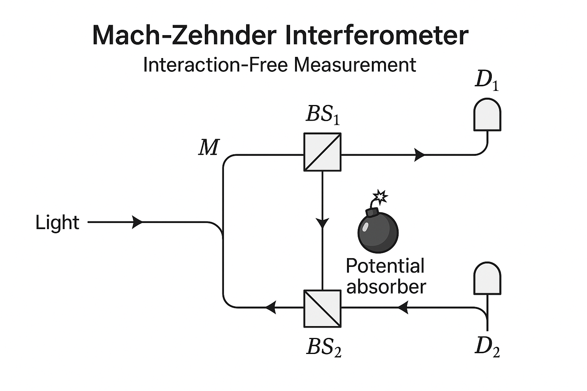
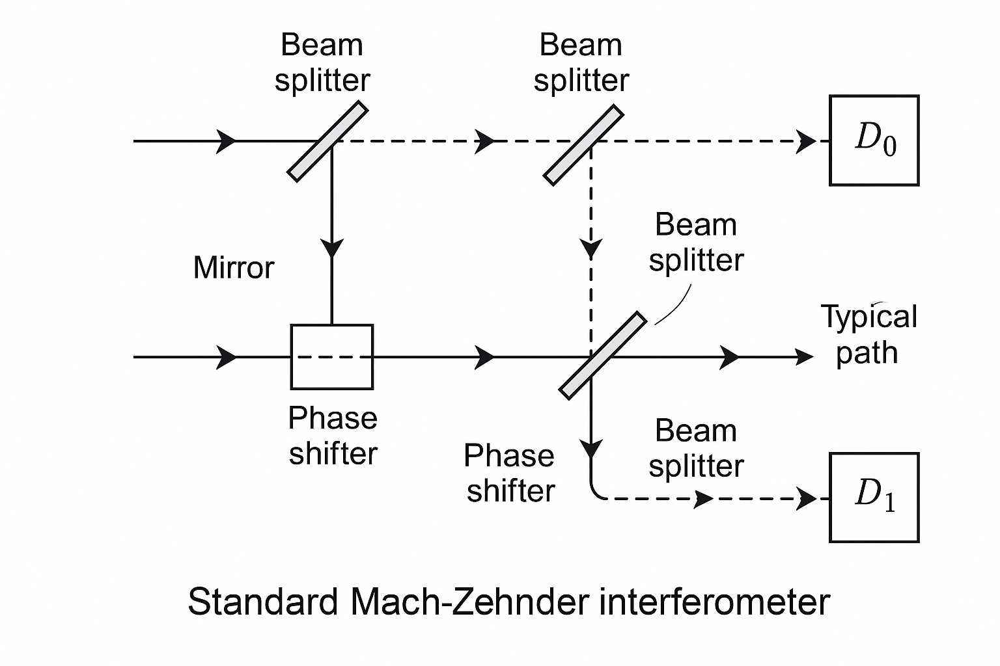
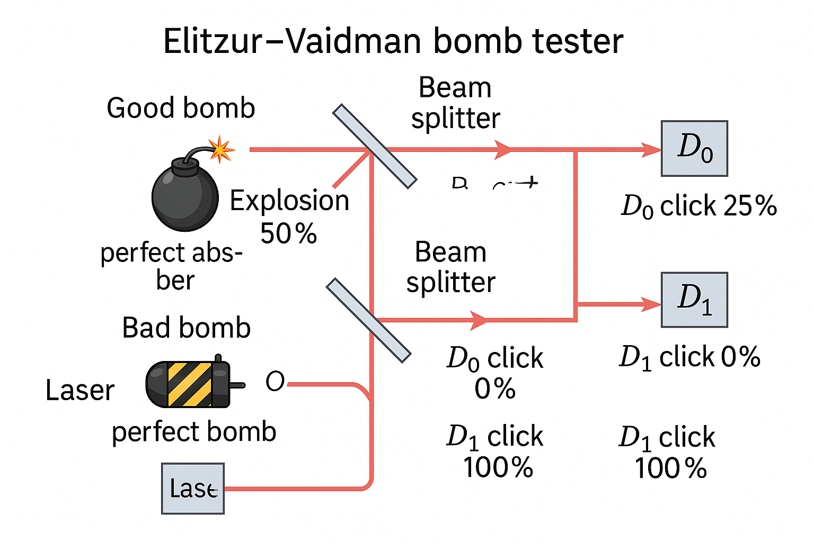
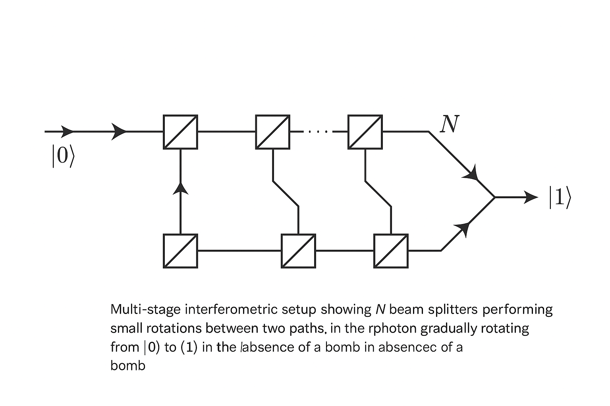
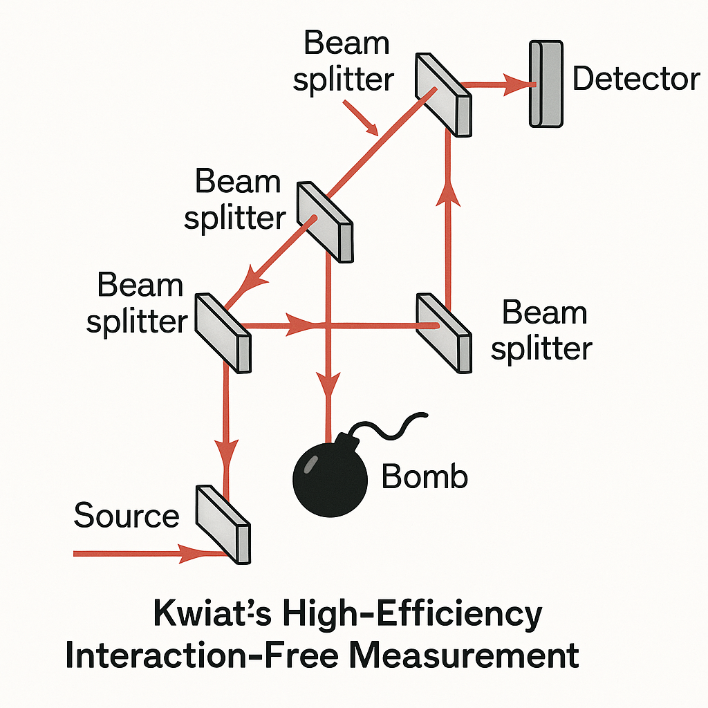
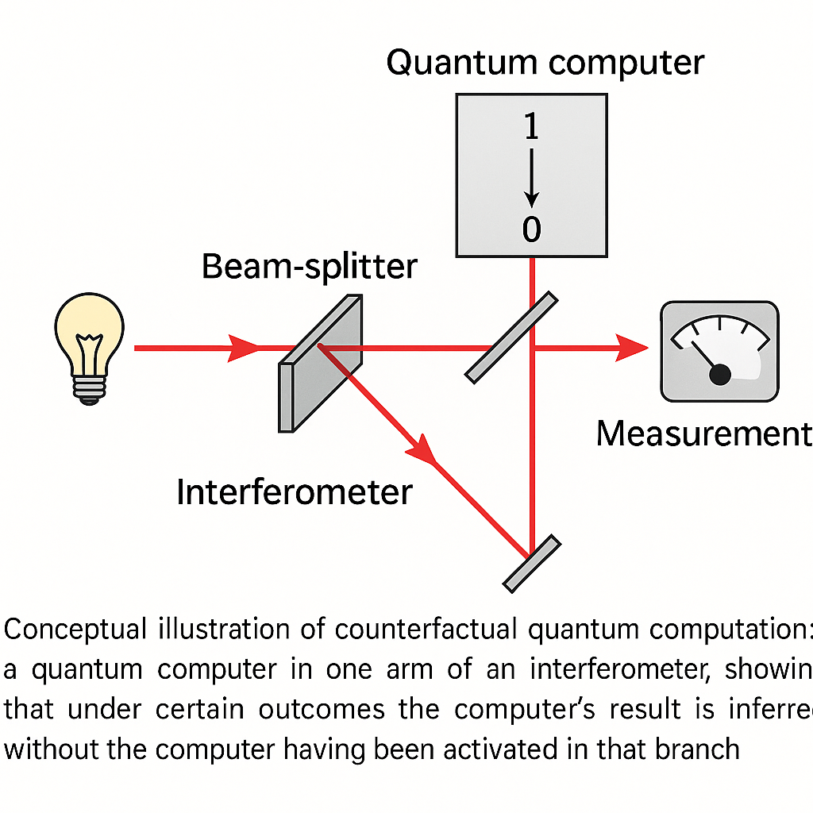
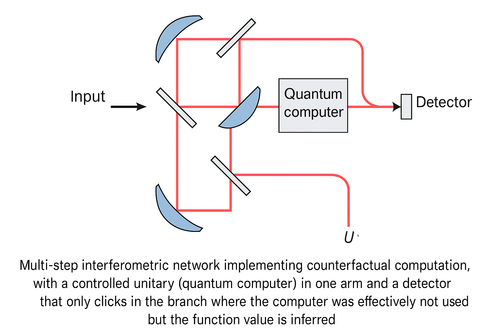
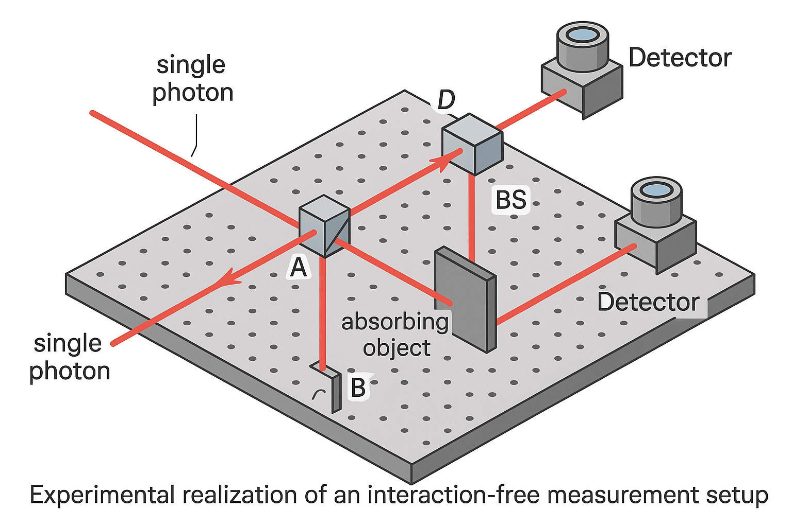

Generated by ChatGPT on 2025-12-16
逐字稿下載：ChatGPT_zh_L07_第_7_講_Decoherence主題_7.txt
完整音檔：
Segment 1:
Segment 2:
Segment 3:
Segment 4:
Segment 5:
Segment 6:
Segment 7:
Segment 8:
Segment 9:
Segment 10:
Segment 11:
Segment 12:
本講將聚焦於退相干理論在「無互動測量（interaction-free measurements）」與「反事實量子計算（counterfactual quantum computation）」中的角色與限制。這一講既是對前幾講中 Decoherence 機制、測量理論、Information-gain–disturbance tradeoff 的延伸，又是對 Elitzur–Vaidman bomb tester、Kwiat 強化版干涉儀，以及反事實量子計算協議的嚴謹重構。
我們的主軸是：在何種意義下可以「不與系統互動」卻得到關於系統的資訊？這在退相干與測量理論的框架中究竟意味著什麼？
在經典物理中，要獲得關於物體存在與否的資訊，至少需要某種形式的物理交互作用（例如光子被物體散射或吸收）。然而量子力學允許更微妙的情境：可以藉由干涉圖樣的破壞，來推知某路徑上是否存在「可致命」的吸收體（例如炸彈），而實際上並沒有發生爆炸或實際吸收事件。這便是 interaction-free measurement (IFM) 的核心。
這類方案最著名的例子是 Elitzur–Vaidman (EV) bomb tester，以及後來 Kwiat 等人透過高階 Mach–Zehnder 干涉與量子 Zeno effect 強化的版本。這些協議與退相干息息相關，因為：
下列問題是本講要精確回答的：

考慮單光子 Mach–Zehnder 干涉儀。用 \(\{|u\rangle, |l\rangle\}\) 表示上、下兩條路徑（upper/lower paths），用 \(\{|D_0\rangle, |D_1\rangle\}\) 表示輸出端兩個探測器的內積空間。對於 50/50 beam splitter (BS)，可採用標準的單光子散射矩陣： \[ U_{\text{BS}} = \frac{1}{\sqrt{2}} \begin{pmatrix} 1 & i\\ i & 1 \end{pmatrix}, \] 在基底 \(\{|u\rangle, |l\rangle\}\) 上作用。例如： \[ |u\rangle \xrightarrow{\text{BS}} \frac{1}{\sqrt{2}}\left(|u\rangle + i|l\rangle\right),\quad |l\rangle \xrightarrow{\text{BS}} \frac{1}{\sqrt{2}}\left(i|u\rangle + |l\rangle\right). \]
典型 Mach–Zehnder 裝置：一個輸入光子先經第一個 BS 分成兩路，路徑可能被插入相位延遲 \(\phi\)；最後兩路在第二個 BS 再次干涉，然後到兩個探測器 \(D_0, D_1\)。
若初態為 \(|\psi_{\text{in}}\rangle = |u\rangle\)（光子由上路徑進入），第一個 BS 後： \[ |\psi_1\rangle = \frac{1}{\sqrt{2}}\left(|u\rangle + i|l\rangle\right). \] 經過相位延遲（設置在上路徑）\(\phi\)： \[ |\psi_2\rangle = \frac{1}{\sqrt{2}}\left(e^{i\phi}|u\rangle + i|l\rangle\right). \] 再經第二個 BS： \[ |\psi_{\text{out}}\rangle = U_{\text{BS}}|\psi_2\rangle = \frac{1}{2}\left[(e^{i\phi}-1)|u\rangle + i(e^{i\phi}+1)|l\rangle\right]. \] 若我們將 \(|u\rangle, |l\rangle\) 的輸出端分別映射到探測器 \(D_0, D_1\)： \[ |u\rangle \to |D_0\rangle,\quad |l\rangle \to |D_1\rangle, \] 則探測器點擊機率為 \[ P(D_0) = \left|\frac{e^{i\phi}-1}{2}\right|^2 = \sin^2\left(\frac{\phi}{2}\right),\quad P(D_1) = \cos^2\left(\frac{\phi}{2}\right). \]
特別地，若 \(\phi = 0\)，則 \[ P(D_0) = 0,\quad P(D_1) = 1, \] 表示在無障礙、完全相干的情況下，光子總是出現在 \(D_1\)。

Elitzur–Vaidman bomb tester 的構想：在 Mach–Zehnder 的某一條路徑（例如下路徑 \(|l\rangle\)）放置一顆「理想炸彈」：
我們希望在不引爆炸彈的情況下，判斷炸彈是否為「好」炸彈（會爆炸）。這似乎與「必須與系統互動才得知資訊」的直觀相牴觸，因此被稱為「無互動測量」。
引入一個 Hilbert 空間 \(\mathcal{H}_B\) 描述炸彈狀態： \[ |G\rangle_B: \text{good bomb (未爆炸)},\quad |E\rangle_B: \text{exploded bomb (已爆炸)}. \] 若光子到達炸彈位置，其演化可以建模為 \[ |l\rangle\otimes|G\rangle_B \xrightarrow{\text{absorption}} |{\rm vac}\rangle\otimes|E\rangle_B, \] 其中 \(|{\rm vac}\rangle\) 表示無光子狀態。
考慮初態 \[ |\Psi_{\text{in}}\rangle = |u\rangle\otimes|G\rangle_B. \] 經第一個 BS 後： \[ |\Psi_1\rangle = \frac{1}{\sqrt{2}}\left(|u\rangle + i|l\rangle\right)\otimes|G\rangle_B. \] 經過炸彈所在位置，下路徑若有光子則爆炸： \[ |\Psi_2\rangle = \frac{1}{\sqrt{2}}\left(|u\rangle\otimes|G\rangle_B + i|{\rm vac}\rangle\otimes|E\rangle_B\right). \]
注意這裡已經產生光子–炸彈的糾纏：光子在上路徑時炸彈未爆炸，在下路徑時光子被吸收而炸彈爆炸。若我們忽略炸彈自由度並 trace out \(\mathcal{H}_B\)，系統（光子）密度矩陣中的路徑相干項會減少或完全消失——這正是一種退相干。
若在不考慮光子被吸收的分支（因為這對應於爆炸事件），在「未爆炸」的條件下，光子態被條件化為 \[ |\psi_{\text{cond}}\rangle = |u\rangle, \] 即光子必然走上路徑。這時進入第二個 BS 的狀態是 \(|u\rangle\)，再經過 BS： \[ |u\rangle \xrightarrow{\text{BS}} \frac{1}{\sqrt{2}}\left(|u\rangle + i|l\rangle\right). \] 因此輸出機率（條件於未爆炸）為 \[ P(D_0|{\rm no\ explosion}) = \frac{1}{2},\quad P(D_1|{\rm no\ explosion}) = \frac{1}{2}. \]
然而我們需要考慮整個實驗空間（含爆炸事件）。以「好炸彈」為例，其完整歷程：
定量計算整體機率：
若炸彈是壞的（不吸收光子），則等效於純 Mach–Zehnder 干涉儀（\(\phi=0\)），輸出完全在 \(D_1\)： \[ P(D_1,{\rm bad\ bomb})=1,\quad P(D_0,{\rm bad\ bomb})=0. \]
因此，一次實驗的結果可被分類為：
得到「無互動測量成功」的機率為 \[ P_{\rm IFM} = P(D_0,{\rm good\ bomb}) = \frac{1}{4}, \] 即四分之一的好炸彈可以在不引爆的情況下被識別。

在上述模型中，光子經過炸彈處時，儘管在「未爆炸」分支中並未發生實際吸收，但整體態中存在另一分支（光子被吸收、炸彈爆炸），導致光子與炸彈糾纏： \[ |\Psi_2\rangle = \frac{1}{\sqrt{2}}\left(|u\rangle\otimes|G\rangle_B + i|{\rm vac}\rangle\otimes|E\rangle_B\right). \] 若忽略炸彈自由度（即對炸彈做部分跡），得到光子密度矩陣 \[ \rho_{\text{ph}} = \operatorname{Tr}_B|\Psi_2\rangle\langle\Psi_2| = \frac{1}{2}|u\rangle\langle u| + \frac{1}{2}|{\rm vac}\rangle\langle{\rm vac}|. \]
在此表述中，路徑間的 off-diagonal coherence \(|u\rangle\langle l|\) 已經完全消失，因為下路徑的光子被轉換成 \(|{\rm vac}\rangle\)。換言之，炸彈充當了一個「哪條路」測量裝置，此測量不必真的「點亮」才發揮退相干效果：只要在原理上可以區分兩條路徑（有/無爆炸），就足以破壞干涉。
從 decoherence 理論看，EV bomb tester 不過是「路徑自由度」與「環境（炸彈）自由度」糾纏的一個特例。在「無互動」成功的事件裡，我們條件化於「環境沒有顯著崩塌」的分支，但這並不意味沒有產生退相干過程：真正區別的是，我們觀察到的那個分支中，沒有發生實際能量交換或吸收事件。
Kwiat 等人（1995–1999）提出一個利用多次「弱」分束與量子 Zeno 效應的高效率無互動測量方案。其核心想法是：將 EV 試驗中的「一次 50/50 分束」替換成 \(N\) 次小角度分束，使光子狀態在 \(|u\rangle\) 與 \(|l\rangle\) 之間漸進式旋轉。
定義兩路徑作為兩維 Hilbert 空間的基底： \[ |0\rangle \equiv |u\rangle,\quad |1\rangle \equiv |l\rangle. \] 考慮一個 beam splitter 對 \(|0\rangle,|1\rangle\) 的作用可寫作一個 SU(2) 旋轉： \[ U(\theta) = \begin{pmatrix} \cos\theta & -\sin\theta\\ \sin\theta & \cos\theta \end{pmatrix}, \] 其中 \(\theta\) 是「分束角」，對應於傳輸與反射振幅。
若沒有炸彈，光子經過 \(N\) 個相同的 BS，則初始狀態 \(|0\rangle\) 被旋轉為 \[ |\psi_N\rangle = U(\theta)^N|0\rangle = \begin{pmatrix} \cos (N\theta)\\ \sin (N\theta) \end{pmatrix}. \] 選取 \(\theta = \frac{\pi}{2N}\)，則 \[ |\psi_N\rangle = \begin{pmatrix} \cos \frac{\pi}{2}\\ \sin \frac{\pi}{2} \end{pmatrix} = \begin{pmatrix} 0\\ 1 \end{pmatrix} = |1\rangle. \]
也就是說：在沒有炸彈時，光子由上路徑完全轉移到下路徑，類似於原 EV 裝置中「總是到 \(D_1\)」的情況，但這裡是在多步中完成。

(upper path) to |1> (lower path) in the absence of a bomb.">若在下路徑放置「好炸彈」，且在每一個小步後，下路徑都有可能吸收光子。直觀地說，因為每一步只有極小的一部分振幅被轉到下路徑，炸彈在每步之間「檢測」到光子就會吸收它，這構成了一種頻繁測量，因而透過量子 Zeno 效應阻止整體旋轉。
形式化地，假設每一步的演化為：
單步演化可用 Kraus operators 來描述。對於「未爆炸」分支，對應的 Kraus operator 為 \[ K_0 = |0\rangle\langle 0| + 0\cdot |1\rangle\langle 1|, \] 即「投影到上路徑」。單步總演化（包含旋轉後再測量）在「未爆炸條件化」下為： \[ |\psi_{k+1}\rangle \propto K_0 U(\theta)|\psi_k\rangle. \] 初始態 \(|\psi_0\rangle = |0\rangle\)。先計算一次： \[ U(\theta)|0\rangle = \cos\theta |0\rangle + \sin\theta |1\rangle. \] 測量（炸彈檢測）之後，若未爆炸，就將下路徑幅度抹去並重新正規化： \[ |\psi_1\rangle = \frac{K_0 U(\theta)|0\rangle}{\sqrt{p_1}} = \frac{\cos\theta |0\rangle}{\sqrt{\cos^2\theta}} = |0\rangle, \] 其中未爆炸機率： \[ p_1 = \|K_0 U(\theta)|0\rangle\|^2 = \cos^2\theta. \]
也就是說，你嘗試讓態旋轉，但馬上用「致命測量」把旋轉到下路徑的部分砍掉，結果態保持在 \(|0\rangle\)。重複 \(N\) 次後，條件於未爆炸的最終態仍是 \(|0\rangle\)，而總未爆炸機率為 \[ P_{\rm no\ expl} = \prod_{k=1}^{N}\cos^2\theta = \cos^{2N}\theta. \] 對 \(\theta = \frac{\pi}{2N}\) 且 \(N\gg 1\)，利用 \[ \cos\theta \approx 1 - \frac{\theta^2}{2}, \] 得到 \[ \ln P_{\rm no\ expl} = 2N\ln\cos\theta \approx 2N\left(-\frac{\theta^2}{2}\right) = -N\theta^2 = -N\left(\frac{\pi}{2N}\right)^2 = -\frac{\pi^2}{4N}. \] 因此 \[ P_{\rm no\ expl}\approx \exp\left(-\frac{\pi^2}{4N}\right)\xrightarrow[N\to\infty]{}1. \]
此時，「沒炸掉」的情況下，光子最終仍在上路徑 \(|0\rangle\)，可在輸出端接上一個對應的探測器 \(D_{\rm top}\)。若探測到光子在上路徑，我們便在幾乎不引爆炸彈的條件下，幾乎確定炸彈是「好的」。
定義「無互動測量成功」事件為：炸彈是好的、實驗過程中未爆炸、且最終偵測到光子出現在「反常」輸出端（如上路徑）。在 Kwiat 方案中，當 \(N\to\infty\) 時，該成功機率可趨近於 1，而爆炸機率趨近 0。

Kwiat 協議在一種極端情形上體現了 Information-gain–disturbance tradeoff：
不過要注意，「擾動」若從量子態空間來看並非為零——路徑自由度與炸彈自由度經歷了多次「潛在測量」的作用，系統態的演化遠非常規單位演化；只是這種擾動沒有體現在明顯的能量交換或炸彈狀態改變上。這是一種典型的「弱測量或未點亮測量」結構，與我們前面在 Bohm apparatus+system 模型中討論的退相干機制有本質連結。
將炸彈狀態簡化為二維系統：\(|G\rangle\)（好炸彈）與 \(|B\rangle\)（壞炸彈）。我們關心的是一個「是否存在好炸彈」的二元辨識問題，而測量結果有三種：
在 POVM 語言中，這對應於三個效應算符 \(\{M_0, M_1, M_2\}\)，滿足 \[ M_0 + M_1 + M_2 = \mathbb{I}. \] 測量結果 \(i\) 的機率為 \(\rho\) 乘上 \(M\) 下標 \(i\) 的跡。」-->\[ p_i = \operatorname{Tr}(\rho M_i), \] 其中 \(\rho\) 是炸彈系統初態密度矩陣。
偏具體些，以 EV 單次實驗為例。令 \(|G\rangle, |B\rangle\) 為炸彈態，假設系統在這兩個態空間中演化如下：
此時等效的三個 POVM 元可寫為 \[ M_0 = \frac{1}{4}|G\rangle\langle G|,\quad M_2 = \frac{1}{2}|G\rangle\langle G|, \] \[ M_1 = \mathbb{I} - M_0 - M_2 = |B\rangle\langle B| + \frac{1}{4}|G\rangle\langle G|. \] 例如若初態為 \(|G\rangle\)，則 \[ P(E_0|G) = \langle G|M_0|G\rangle = \frac{1}{4}, \] \[ P(E_2|G) = \frac{1}{2},\quad P(E_1|G) = \frac{1}{4}. \] 若初態為 \(|B\rangle\)，則 \[ P(E_0|B) = \langle B|M_0|B\rangle = 0,\quad P(E_2|B) = 0,\quad P(E_1|B) = 1. \]
在這個 POVM 表述中，可以清楚地看到：IFM 不是沒有測量，而是以一種特定結構的非專一性（unsharp）測量在炸彈空間上作用。EV 情境只是 measurement theory 裡的一個具體實現，其奇特之處來自於測量結果與「能量交換/爆炸」之間的偶合非對稱性。
對炸彈+光子系統而言，可以用 Kraus operators \(\{K_i\}\) 來描述包括爆炸在內的所有可能事件。簡化為單步 EV 裝置，定義：
這些算符滿足完備關係 \[ \sum_i K_i^\dagger K_i = \mathbb{I}. \] 系統初態為 \(|\psi_{\rm ph}\rangle\otimes|G\rangle\) 或 \(|B\rangle\)。對於反事實地判斷炸彈是否為好，我們只關心 條件化於沒有爆炸但測得 \(D_0\) 的後驗態： \[ \rho_{G|D_0} = \frac{K_{D_0}\rho_0 K_{D_0}^\dagger}{\operatorname{Tr}(K_{D_0}\rho_0 K_{D_0}^\dagger)}. \]
這與前幾講中討論的 measurement-induced decoherence 完全一致：測量的本質是將初態空間分裂為多個分支，每個分支對應不同的指標讀數。無互動測量的「沒爆炸」分支，只是眾多分支中的一個，而我們在統計上有選擇地關注這個分支。在此分支中，可以說「沒有發生能量交換」，但從全局（含其他分支）來看，退相干與態空間的非單位演化仍然存在。
反事實量子計算（CFC）試圖實現如下看似悖論的目標：
在某些實驗結果下，我們可以知道一個量子電路（或「量子電腦」）若被啟動，將會輸出何種結果，但實際上該電路在那個分支並沒有被真正執行。
這與 IFM 的精神非常相似：我們希望知道「炸彈是好是壞」，但在成功分支中，炸彈並未爆炸；同理，反事實量子計算中，我們希望知道「量子運算的結果」，但在成功分支中，量子電路並未真正作用在訊息上。

考慮一個兩路徑系統 \(|0\rangle, |1\rangle\)，類似於 Kwiat 多步干涉儀。令一個黑箱 \(U_f\) 位於 \(|1\rangle\) 路徑中，其作用模擬一個量子計算： \[ U_f|x\rangle|0\rangle_{\rm anc} = |x\rangle|f(x)\rangle_{\rm anc}, \] 其中 \(|x\rangle\) 是輸入註冊，\(|f(x)\rangle\) 是輸出註冊。為了說明反事實概念，常見簡化是將輸入態固定，例如只關心單一輸入 \(x_0\)，以及希望知曉 \(f(x_0)\in\{0,1\}\)。
我們設計一個干涉網路，使得：
在某些輸出結果（例如某個特定探測器點擊）下，我們能夠推論 \(f(x_0)=1\)，而同時，在這個條件事件中，系統態實際上從未進入被激活的黑箱路徑。這裡的關鍵與 Kwiat IFM 完全相同：使用多步小角度分束與 Zeno 抑制。
我們以一個典型的 Zeno 式 CFC 協議作框架（略去實驗細節，專注於 Hilbert 空間結構）。
精心設計的干涉網路可保證：在某個特定輸出檢測模式（例如特定 path 探測器點擊）下，只有 \(f(x_0)=1\) 的情況能出現此結果；而同時，條件於該結果的態中，path 自由度實際上「幾乎從未」進入 \(|1\rangle\)（黑箱路徑）。從總體演化看仍然有交互分支，但這個條件事件實現了「反事實」資訊獲得。
若用 Kraus operators 描述，與 Kwiat IFM 類似：對應「計算未被觸發但結論已被得知」的 Kraus operator 可寫為某種投影，將路徑限制在「未進入黑箱」的子空間。同時，全局演化中存在其他分支，在那些分支裡系統確實進入黑箱並執行運算。我們只是只保留某個不執行的分支來做統計。

實際實驗中，退相干限制了 CFC 的效能與規模：
更深層次地，許多工作指出，在更嚴格的資源計算框架下，CFC 並未真正打破資訊–擾動基本限制，而是透過後選（postselection）與分支條件化，在統計上呈現出看似「無代價」的資訊獲得。從全局密度矩陣與系統–環境的角度來看，總的退相干與熵增並不小於對應的資訊獲得量。
將 IFM 與其他測量類型對照：
若從流形幾何的觀點看，IFM 更像是在 Hilbert 空間上劃出特定測量結果的子流形，並觀察在該子流形上 induced dynamics 的性質；弱測量則是對整體流形的一次「微小形變」；而 QND 則試圖讓測量流形與 Hamiltonian 生成的演化流形盡可能對齊。
回顧前幾講對 Information-gain–disturbance tradeoff 的一般表述：對一個量子態族 \(\{\rho_\theta\}\) 採行測量表 \(\{M_i\}\)，對 \(\theta\) 的資訊增益可以用 Fisher information 或量子相對熵來量化；擾動則可用測量前後的態距離（例如 trace distance）來度量。一般而言，提高資訊增益必須讓測量算子在該態族上有更強的可區分作用，也就不可避免增加擾動。
在 IFM 的語境中，我們的「參數」是炸彈類型（好/壞），而成功分支看起來實現了「大資訊–小擾動」的極端：對「好炸彈」可用高機率在不爆炸的條件下判斷其為好。同時，若以炸彈內部的能量或結構變化作為擾動指標，這個擾動在成功分支裡幾乎為零。
然而，若從全系統（包含未被選擇的分支）看，總擾動與總資訊增益滿足一般的 tradeoff。這可以從全體 Kraus operators 的完備性關係與量子熵不等式推導（此處不展開詳細證明），其核心是：後選條件化造成了對資源與事件的「偏態過濾」，非等價於整體自由演化。
在實驗層面，IFM 與 CFC 已在多種平台上被實現與驗證：

在量子詮釋層面，IFM 與 CFC 觸發了不少討論：
從退相干與環境糾纏的角度看，這些詮釋差異可以被理解為對同一數學結構（整體波函與部分跡）的不同語言描述。無互動測量在數學上仍服從標準的 trace-preserving 組合與 CPTP 映射，只是我們觀察與解讀的方式不同。
雖然 IFM 與 CFC 已在概念上被廣泛理解，仍有若干有待進一步探討的方向：
下一講中，我們將結合本系列對 Decoherence、測量理論與量子資訊的討論，進一步探討退相干在量子錯誤更正與容錯量子計算中的角色，並分析在存在環境噪聲下極限可達的量子資訊處理能力。